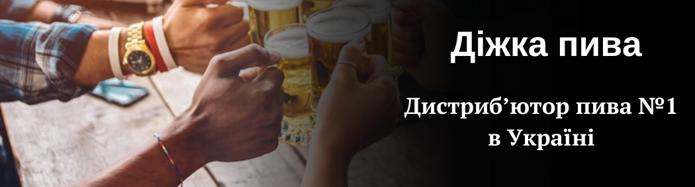

ДІЖКА ПИВА
ДІЖКА ПИВА


Дана сторінка написана за допомогою flex властивостей

"Діжка пива" - один з найуспішніших дистриб'юторів пива в Україні, заснований в 1995 році. У 2002 році компанія стала ексклюзивним дистриб'ютором "Global Brews", представляючи світові пивні бренди. З роками компанія розширювалася, впроваджуючи нові технології та виграючи нагороди. Сьогодні "Діжка пива" продовжує успішно поширювати пивну культуру в Україні.
"Діжка пива" представляє великий спектр пивних брендів, включаючи як відомі українські марки, так і відомі міжнародні бренди. Серед них ви знайдете такі бренди, як "Львівське" і "Чернігівське" - які стали національними символами. Крім того, компанія також пропонує широкий вибір іноземних пивних брендів, таких як "Stella Artois", "Corona extra", "Hoegaarden" та інші. Це дає можливість споживачам насолоджуватися різноманітністю смаків і стилів пива з різних країн світу. "Діжка пива" завжди прагне дотримуватися найвищих стандартів якості та представляти на ринку найкращі пивні бренди для задоволення смакових переваг своїх клієнтів.
Наша історія
"Діжка пива" - один з найуспішніших дистриб'юторів пива в Україні, заснований в 1995 році. У 2002 році компанія стала ексклюзивним дистриб'ютором "Global Brews", представляючи світові пивні бренди. З роками компанія розширювалася, впроваджуючи нові технології та виграючи нагороди. Сьогодні "Діжка пива" продовжує успішно поширювати пивну культуру в Україні.
Бренди пива, які ми представляємо
"Діжка пива" представляє великий спектр пивних брендів, включаючи як відомі українські марки, так і відомі міжнародні бренди. Серед них ви знайдете такі бренди, як "Львівське" і "Чернігівське" - які стали національними символами. Крім того, компанія також пропонує широкий вибір іноземних пивних брендів, таких як "Stella Artois", "Corona extra", "Hoegaarden" та інші. Це дає можливість споживачам насолоджуватися різноманітністю смаків і стилів пива з різних країн світу. "Діжка пива" завжди прагне дотримуватися найвищих стандартів якості та представляти на ринку найкращі пивні бренди для задоволення смакових переваг своїх клієнтів.
- ВНЗ: НТУУ КПІ
- Факультет: ФІОТ
- Група: ІП-22
- Прізвище та ініціали: Підпанюк В.А.
- Контактний номер: +380689ХХХХ65